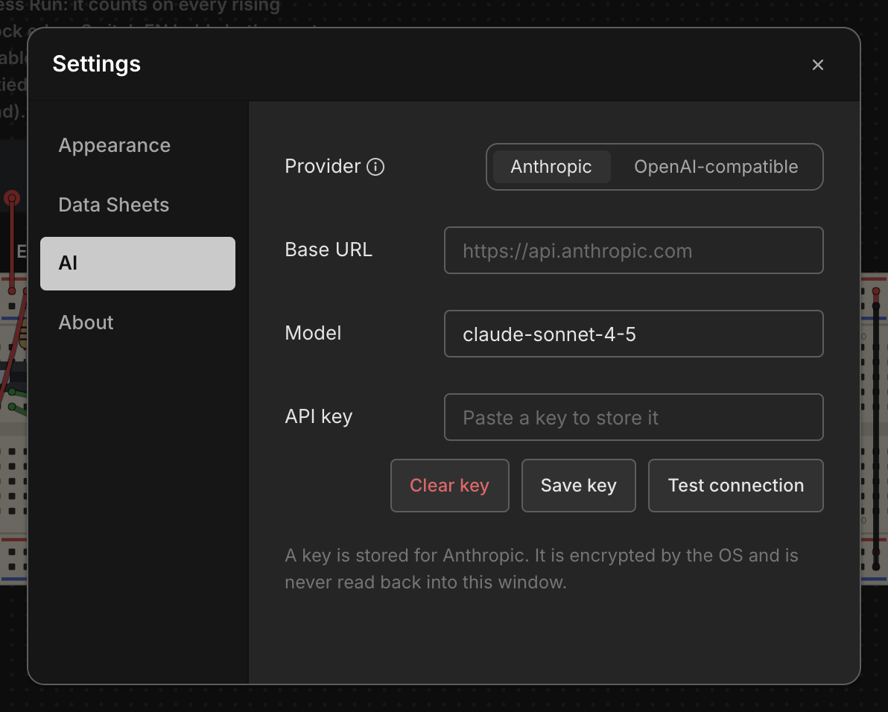

Settings
Chip Hippo keeps its handful of app-wide preferences in one small Settings dialog — a tabbed master-detail card with a left nav rail and a panel on the right. It's deliberately minimal: four tabs, a few controls each, applied live the moment you change them.

Opening Settings
Open the dialog with Cmd/Ctrl+,, or click the gear icon in the top-right
corner of the header. Both routes lead to the same dialog seeded with your
current settings, so it doesn't matter which you use.
Several settings carry a small ⓘ beside their label. Click it for a note
explaining what the setting does and what it doesn't touch; Esc, a click
anywhere outside the note, or the ⓘ again closes it. The first Esc closes
the note and the next one closes Settings, so you never lose the dialog by
dismissing a note.
Appearance
The Appearance tab is the one the dialog opens on:
- Editor font size — how big Chip Hippo's own text is drawn, in pixels:
11, 12, 13, 14, 16 or 18, default 13. It applies
to every window at once, including the floating pinout, memory inspector and
user-guide windows, and to the boxes around the text — buttons and panels
grow with it rather than clipping it.
Cmd+=andCmd+-step through the sizes from the keyboard andCmd+0restores the default. What it does not change is the desk itself: chip labels, board addressing and your own annotations are printed on the circuit and drawn to the breadboard's scale, so they grow with the desk zoom (Option+Cmd+=) instead. - Theme — System, Light or Dark. System follows your operating system's own setting; the other two pin it. The choice applies to every Chip Hippo window at once, including the floating pinout, memory inspector and user-guide windows, and to the native menus and dialogs.
- Selection border colour — a
#rrggbbcolour picker for the outline drawn around whatever's selected on the desk. Leave it unset to use the theme's default accent colour instead of a custom one. - Default LED color — which colour a newly placed LED, LED bar or seven-segment digit gets. Unlike the others this one isn't applied live; it's read when you place a part, so changing it doesn't recolour anything already on the desk. Any placed part's colour can still be changed from its Properties… dialog.
- Wire layout — Direct (the default) or Routed, the layout method a newly laid wire gets. Direct wires sag from hole to hole; routed wires run straight and can be bent around obstacles by dragging points into them (see Wiring). Like the LED colour it's read when you lay a wire, so wires already on the desk keep the layout they have — change one from its own Properties… dialog.
Everything but the LED colour and the wire layout takes effect immediately — there's no separate Apply or OK step.
Data Sheets
The Data Sheets tab points Chip Hippo at an external folder of manufacturer datasheet PDFs on your machine. Click Browse… to pick a folder with the native file picker; the chosen path is shown next to it, with a Clear button that resets it to no folder selected.
Name the PDFs in that folder after each chip's catalog reference (for
example 74LS00.pdf). When a chip's file is found there, its
pin-assignments window grows a button that opens the PDF
in your system's default viewer. This is separate from the small datasheet
crop the pinout window already shows for most chips — the external folder is
for the full manufacturer document, not the built-in crop.
If you don't already have a collection, Download… fetches one for you. It pulls a datasheet for every part Chip Hippo has a published source on file for, names each file after the part it belongs to, and points the setting above at that folder when it's done — so the buttons appear with nothing else to set up. A progress window counts the files in and names anything that couldn't be fetched; closing it stops the download and keeps whatever already arrived. The sources are:
- Texas Instruments — the current manufacturer's own documents for much of the 74LS family;
- Microchip — the Atmel EEPROM parts;
- Alliance Memory — the large SRAM;
- the Western Design Center — likewise for the 65xx parts;
- the USC EE 459Lx reference library — vendor scans of the older 74LS parts, collected for a university course, plus the HD44780, the memory parts and the DIP resistor/oscillator packages;
- a datasheet archive, for the one part whose maker no longer publishes it.
Expect a few tens of megabytes in total; the modern manufacturer PDFs are much larger than the old scans.
Between them they don't carry every part in the catalog, so some chips will still have no PDF button. Press Download… again whenever you like — it replaces what it fetched last time. It always writes to Chip Hippo's own folder and never to one you picked yourself, so a collection of your own is never overwritten: Browse… and Download… are simply two ways of setting the same folder, and whichever you did last is the one in effect.
AI
The AI tab is where you point Chip Hippo at your own AI connection, for the AI circuit builder. Nothing here is required — the app works completely without it, and contacts no AI provider until a connection is configured and you ask the builder for something. (The only other times Chip Hippo reaches the network at all are the datasheet Download… button above, while you're pressing it, and the update check on the About tab below, which is switched off until you turn it on.)

- Provider — Anthropic, or OpenAI-compatible. The second covers Ollama, LM Studio, OpenRouter, vLLM and anything else speaking that request format; you supply the base URL.
- Base URL and Model — leave either blank to use the chosen provider's
default, which is shown as the field's placeholder. Both commit when you
leave the field or press
Enter, not as you type. - API key — paste it and click Save key. Clear key forgets it. A local server that needs no key works with this left blank.
- Test connection — one small request that checks the base URL, key and model together, so a typo is found here rather than on your first build.
The key is never written to Chip Hippo's settings file. It's handed to your operating system's own secure credential store — Keychain on macOS, the Credential Manager on Windows, the desktop keyring on Linux — encrypted, and it's never read back into the app's window afterwards; the dialog only learns whether a key is stored. If no secure store is available on your system, Chip Hippo refuses to save the key and says so rather than quietly writing it out in the clear.
About
The About tab shows which version of Chip Hippo you're running, and is where updates are handled.
- Check automatically — On or Off, and Off is the default. On, Chip Hippo asks GitHub once, shortly after launch, whether there's a newer release. Off, it never asks on its own — but the button below still works whenever you want to know.
- Check for updates — checks right now and says what it found on the line underneath: that you're up to date, that a version is downloading, or that the check couldn't be made.
When an update is found it downloads quietly in the background; you can carry on working, and there's no progress bar in your way. Once it's ready a Restart to update button appears here, and a notice appears in the corner of the desk with a Restart button of its own. Nothing is installed until you say so. If you'd rather not stop what you're doing, ignore it — the update installs by itself the next time you quit Chip Hippo, and restarting here runs the same "you have unsaved changes" prompt that quitting does, so a design in progress is never lost to an update.
The check itself is the only thing sent, and only to GitHub. Chip Hippo has no analytics and reports nothing about you or your circuits.
You'll see this tab differently depending on where your copy came from. A copy installed from the Mac App Store updates through the App Store like every other app there, so this tab shows only the version and says so — there are no controls, because there'd be nothing for them to do. A development build says that updates are only available in installed builds.
What else persists automatically
A few things aren't part of this dialog but are remembered between sessions without any action on your part: the app window's position and size, the desk camera — your current pan position and zoom level — and which panels you left open (the parts tray, the build guide, the analyzer, the AI builder) along with the height you dragged each docked one to. Close Chip Hippo and reopen it, and you're back exactly where you left off.
See Files, Saving & Undo for how your circuit itself is saved.